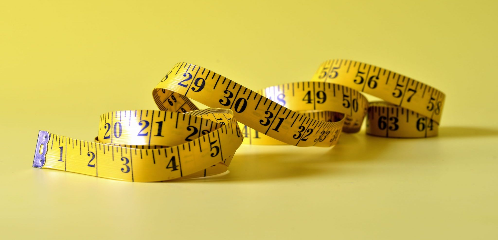
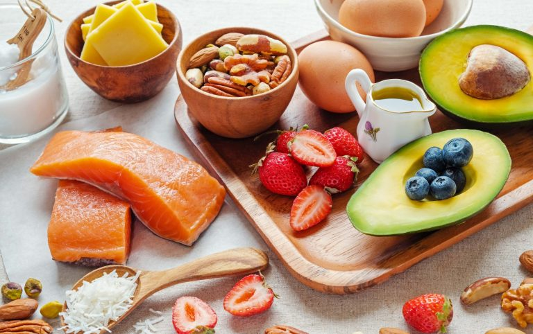
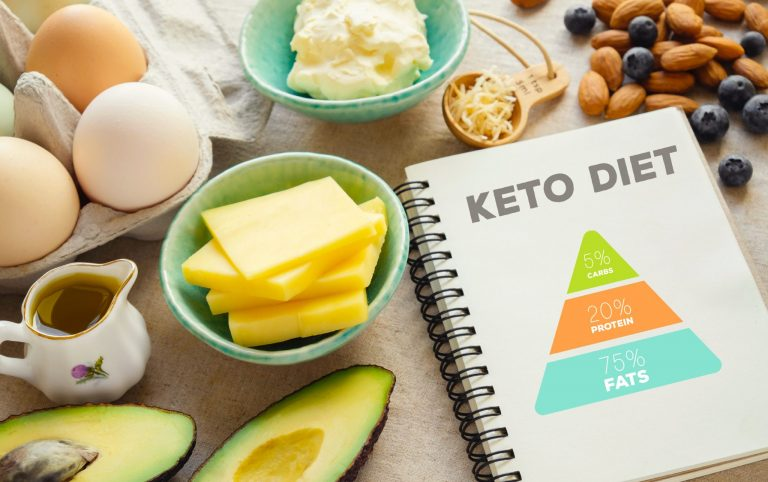

Keto Diet vs. Atkins: How They Are Alike and Different
July 23, 2021
The future of tech, today.
July 23, 2021
There is no reason to deny our bodies of essential nutrients and vitamins to the point of hunger. You can be full and satisfied while losing weight. This is the first thing you should know about the Atkins diet. It comes in two varieties: Atkins 20 and Atkins 40. The former is the original and works well if you want to lose more than 40 pounds, but the latter is less stringent and works well if you only want to drop 40 pounds.
There is a backstory to everything. So, here's the deal: the Atkins Diet was created by a doctor. Dr. Robert Coleman Atkins released a book in the 1960s explaining how low-carb eating can be more effective than any low-fat diet. The book received widespread appreciation and will be studied for many years to come.
Both Atkins diet plans begin with a moderate carb consumption (20 grammes in the case of the '20' plan and 40 grammes in the Atkins 40 plan), which you can gradually increase.

Unlike the Atkins diet, the keto (or ketogenic) diet allows for very few carbs as long as you stick to it. In a nutshell, it is a high-fat/low-carb diet with ample protein in between. One of the keto diet's goals is to increase metabolism. This makes it easier for your body to switch from sugar to fat burning.
Ketogenic diet was introduced back in the 1920s as a cure for childhood epilepsy. It was discovered then that a low-carb diet causes ketosis – a metabolic state in which the body burns fat at an extremely high rate.
Here you get 5-10% of your energy from carbs, 20-30% - from proteins, and the rest 65-80% comes from fats.
When you go low-carb, your body doesn’t get enough sugar to fuel itself. When our body lacks sugar to turn
it into energy, it uses fat instead. Your liver then converts fat into ketones – type of acid that your body
later uses for fuel. Ketones are considered a cleaner energy source compared to carbs. On a plus side,
ketosis also means lower risk of heart disease and improved brain function.
Your ketogenic diet should include:
When it comes to weight loss, keto diet takes the cake. It also keeps your weight
steady in a longer run should you stick to it. Many believe it’s because keto is more consistent with
carbohydrates than Atkins.
Although the keto diet is more efficient for losing weight, it’s also a real challenge to stick to it,
because the amount of carbs you're allowed to eat is simply too low. Not many can find it in them to give up
on so many foods for good.
Atkins diet is less rigid, so it may be a good alternative if you’re after weight loss. If we talk about
other goals, keto has additional long-term benefits for your health. It can so much as help halt the growth
of cancer cells, boost your mental health and prevent or reverse type 2 diabetes.
It all boils down to these three factors that should influence your decision: your body constitution, the
state of your health and the goals you pursue. You need to remember that change of a diet is a serious
undertaking, and not necessarily what your body needs right now. So, it’s always best to consult with your
health care provider before you decide to give either diet a shot.
If you do give any low-carb diet a go, and then decide it’s not for you after all, remember that going back
takes time. Don’t rush to ramp up your carbohydrate intake. Especially when pulling away from the keto diet.
Going back to larger carb portions overnight leads to spikes in insulin levels and weight gain because of
all the sugar your body is no longer used to. What you need to do is gradually increase the amount of carbs
per serving.